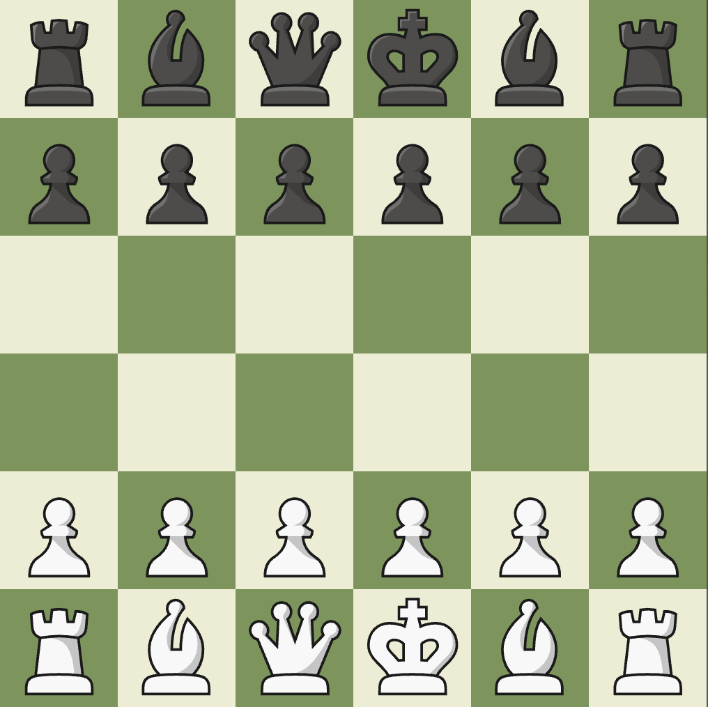
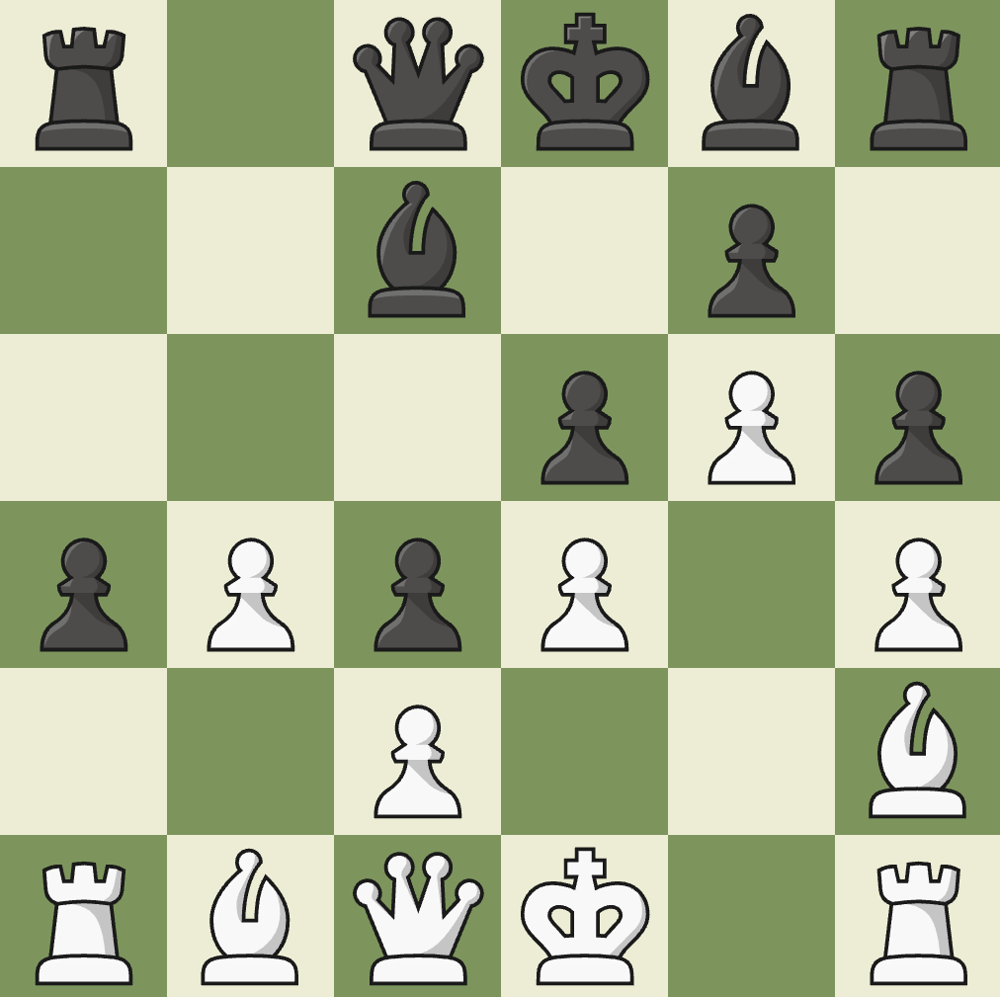
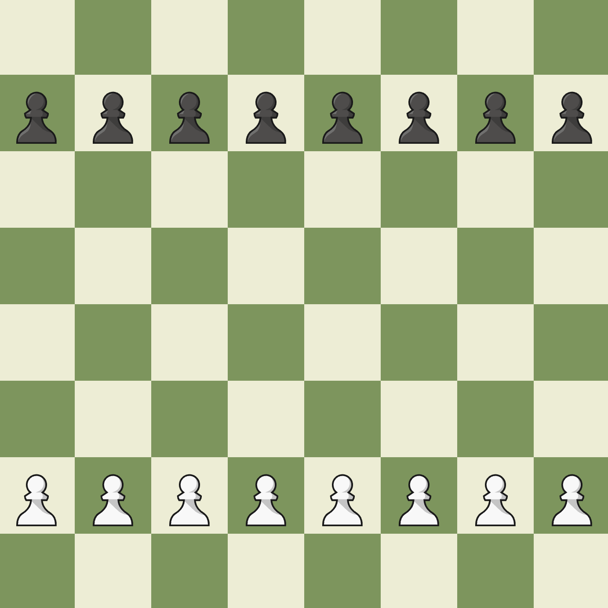
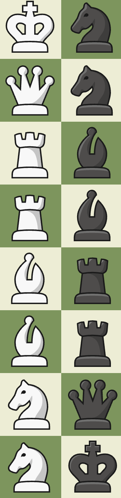
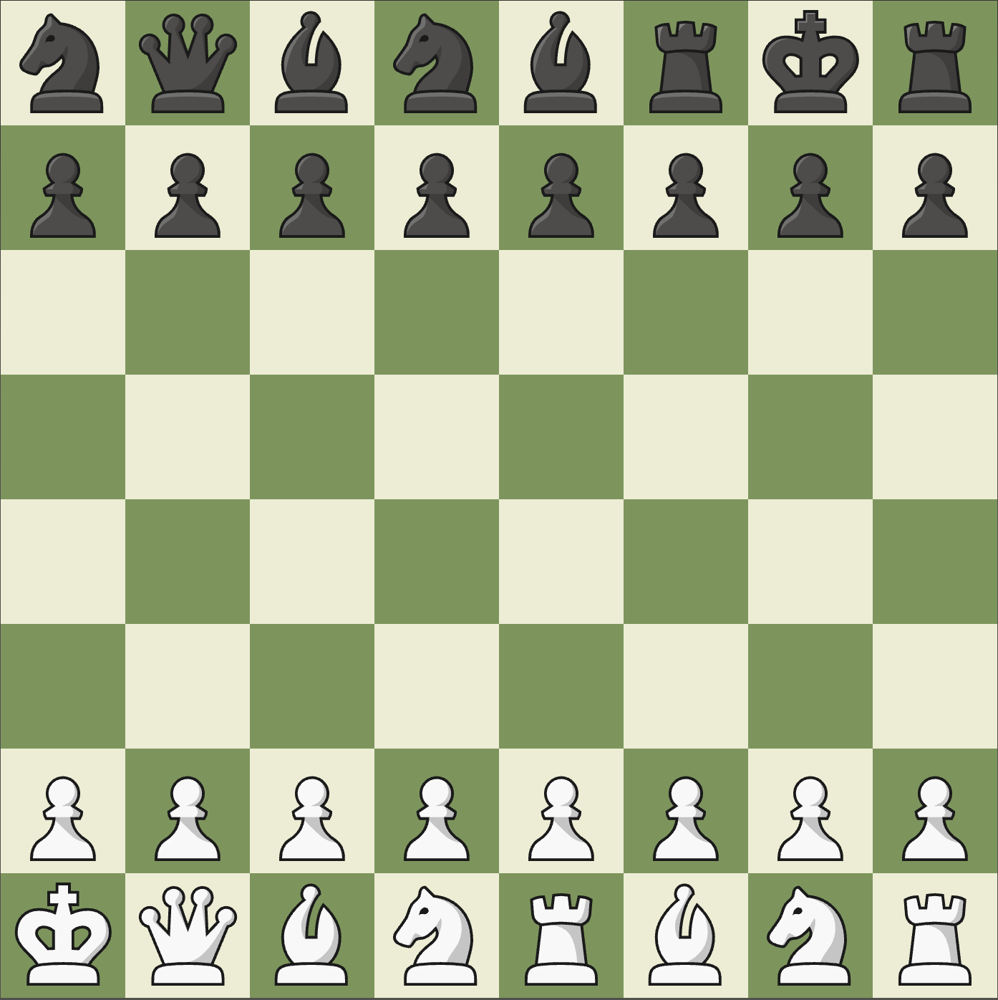

The board category features variants that only change the size of the board or the setup of the pieces. Everything else stays the same.
| Variant Name | Chess 960 | Mini Chess (6x6) | Pre-Chess |
|---|---|---|---|
| Game Length | Normal | Very Short | Long |
| Strategy | ★★★★☆ | ★☆☆☆☆ | ★★★★★ |
Chess 960
Rules

Chess 960, or Fischer Chess, has a very simple setup if you have technology, which you should have because you are on this site. For the setup, you can use a computer to generate a setup by using this 960 Chess Generator, or find another way to randomize the setup manually. If you will do it manually, after randomizing the back rank of one side (the pawns stay the same), copy the setup on the other side of the board. After you do that, play chess with all the normal rules, whoever checkmates the opponent wins.
Castling
Although it seems like it shouldn't, castling is still in the game. When you are castling, move the king towards the rook until it is on the closer side of the rook, and then move the rook to the other side of the king. Keep in mind, the space between the king and the rook has to be empty, and neither of the pieces could have moved prior to castling, otherwise, you can't castle. If the king and the rook are right next to each other, just swap their positions.
Strategy
Even though it looks simple, Chess 960 adds a whole new layer of strategy. Forget about openings, in this variant, you will have to adapt to every game you play. I recommend developing all your pieces as soon as possible, and try to control the middle. Keep you opponent's king position in mind too, and try to prepare a deadly attack on your opponent. It is hard to give direct advice because each game is very different, so the best thing you can do is develop you pieces and find major weaknesses in you opponents defences.
Mini Chess (6x6)
Rules
Mini Chess is a variant of chess that makes the gameplay a lot simpler and the game a lot shorter. The setup is shown on the image to the right. On the first rank, it's rook, bishop, queen, king, bishop, rook, and the second rank is just pawns. Black has the same setup. Other than the setup, all rules are the same, and castling works as normal; move the king towards the rook until it is on the closer side of the rook, and then move the rook to the other side of the king.
Strategy
Mini Chess removes a lot of strategy because of the limited movement options. Your main goal is to advance your pawns while keeping a strong defense. If your opponent manages to break through your pawn wall, they will gain a huge advantage and it will be very difficult to defend. Avoid moving pawns twice on their first move because doing so makes them very vulnerable. Keep your rooks safe until the endgame. Since your are on such a small, crowded board, they lack flexibility early on but can dominate once the board opens up. On the other hand, the bishops and queen are very strong early game, just make sure to keep them in safe locations, because it is easy to get trapped on this small board (notice how on the image to the left, the pieces have very low mobility here).
Pre-Chess
Rules
 Pre-Chess is a really strategic chess variant that adds a whole new layer of planning. Before the game starts, all pawns are placed in their normal positions, and then players take turns setting up their side. Each player can have 2 bishops, 2 knights, 2 rooks, 1 queen, and a king. White starts and puts any one piece on the rank closest to them. Next, Black places 2 pieces or their rank, and each player takes turns placing two pieces until all spaces on the 1st and 8th ranks are full. Castling is still a rule, and if you are confused, read the 960 chess castling rules, because those principals are in every chess game when it comes to castling. Keep in mind, everybody has to have exacltly 2 bishops, 2 knights, 2 rooks, 1 queen, and a king.
Strategy
Pre-Game
The Pre-Game extremely important in Pre-Chess because it decides your playstyle and positioning. Whenever it is your turn to place a piece, you want to place a piece that is hard to counter, like the queen, or knight, because they have very good mobility. Avoid placing your king early on, because your opponent can start placing their pieces in positions that put pressure on the king. I recommend placing king on one side of the board, and the rook on the complete opposite, so you can castle to safety if there is lots of pressure. Make sure to avoid having two bishops on same color squares. Your goal will be to control as much space as possible, so make sure you put your pieces in places that make them easily developable. If you look at the image to the right, you will see a good setup (white) vs bad setup (black).
Game
Now it is time to put your planning to good use. In this game, positioning is super important, so try to avoid trading if you are in a better position. Don't trade an active bishop for a trapped bishop, or a fully developed knight for a knight on the rim. Try to pressure you oppenents king side, and if they have a backup rook for castling, make sure to either force the rook or king to move, or have a mini attack on the rook's side. A major part of this game is decided in the planning, so make sure not to lose your positioning is you are winning, and you'll be fine.